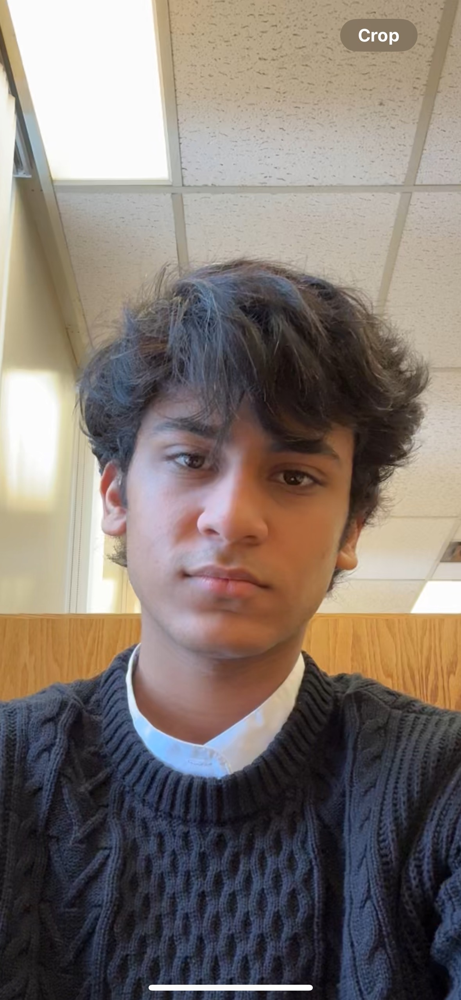

Yash Choudhary

Summary
A motivated tech enthusiast looking for internships / coop for winter 2025.
Passionate and driven with a keen interest in exploring dynamic
opportunities in software development, data science, and software testing.
Eager to leverage my technical skills and enthusiasm for innovation to
contribute to impactful projects and advance within the tech industry.
Education
-
Bachelors of Mathematics (hons) - University of Waterloo (2023-2028)
GPA - 85%
-
High School Diploma - Presidium School
GPA - 92%
Experience
-
Global Game Jam 2024
(University of Waterloo)
Jan 2024, Ontario, Canada
-
Used Godot game engine and GDscript language to design a 2D game as per the theme - Make me laugh.
-
Learned the basic tools to build a game and presented the game in a group of 3 to the audience explaining the features.
-
Software development Intern
(Unique Air Services Pvt Ltd.)
Mar 2023 - Jun 2023, New delhi, India
-
Managed development of the company website using Python, Html , Css , React js.
-
Organized databases for daily improvements.
-
Provided exceptional customer service for flight bookings
increasing the customer satisfaction by 15% .
-
Summer Intern
(Aashman Foundation)
Jun 2022 - Jul 2022, New delhi, India
-
Engaged in interdisciplinary work involving Documentation work, software, market- ing, and social media management.
-
Contributed to providing sanitation and hygiene initiatives for women in rural areas.
Technical Skills
-
Programming Languages :
Python, Racket, C/C++, SQL, Javascript
-
Other :
HTML, CSS, C/C++ Preprocessor, Linux Command Line, Version Control (git), Academic writing
Awards/Certifications
- The Zero Experience Certificate of Innovation , University of Waterloo (2023)
- University of Waterloo President’s Scholarship of Distinction (2023)
- Honours Excellence award for high academic performance at Presidium School (2023)
- 5 Star certificate of internship at Aashman Foundation (2022)
Contact Me